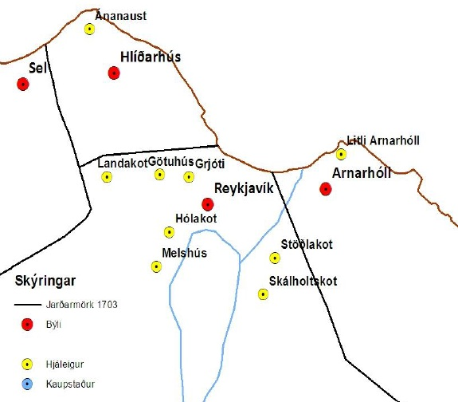
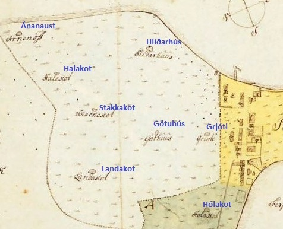
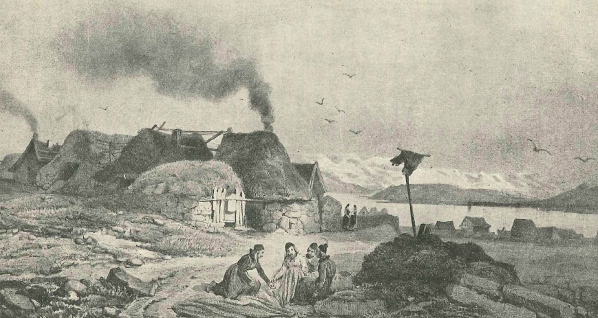
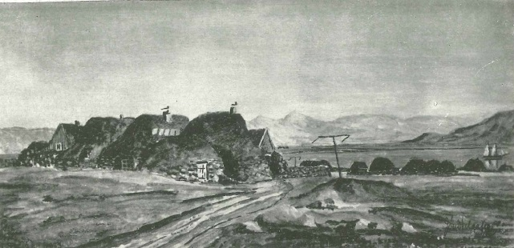

Staðsetning helstu bæja og býla í Reykjavík og nágrenni árið 1703.
Götuhús voru ein af hjáleigum Víkur í Reykjavík og stóðu á milli Landakots og Grjóta, þar sem nú eru Túngata 25 og 27. Hér eru myndir, kort og texti um sögu býlisins.



Götuhús árið 1836 samkvæmt teikningu Gaimards. Götuhús voru nokkurn veginn mitt á milli Landakots og Grjóta og stóðu þar sem nú eru Túngata 25 og 27. Ekki er vitað hvenær byggð hófst í Götuhúsum en samkvæmt manntali 1703 virðist hafa búið þar ein fjölskylda. Við stofnun Innréttinganna um miðja 18. öld var ákveðið að leggja tún Götuhúsa til þeirra. Lauk þá að mestu búskap en tómthúsbýli risu þess í stað. Þegar Innréttingarnar voru boðnar upp um 1800 keypti Westy Petræus, einn helsti kaupmaðurinn í Reykjavík á þeim tíma, Götuhús sem og flestar aðrar eignir Innréttinganna. Götuhúsum hnignaði mjög uns Geir Zoega stórkaupmaður eignaðist þau árið 1863. Hann hóf þegar miklar jarðarbætur, lét rífa kotin og slétta yfir, enda voru þau þá flest í eyði eða að hruni komin og naumast mannabústaðir. Nefndust túnin Geirstún eftir það, þangað til svæðið tók að byggjast um eða eftir aldamótin 1900.

Málverk Jóns Helgasonar biskups af Götuhúsum eins og hann telur að þau hafi litið út um miðja 19. öld.